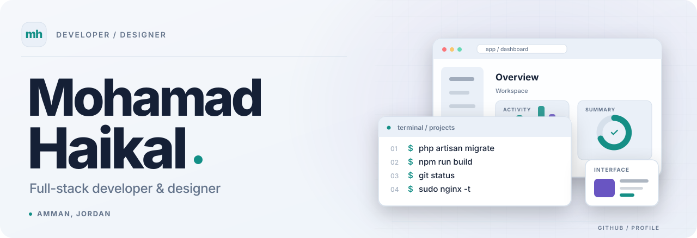
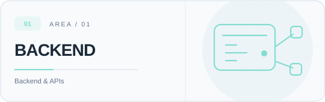
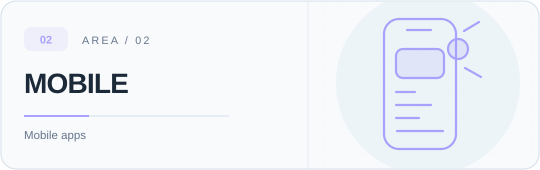
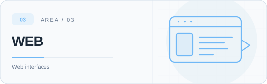
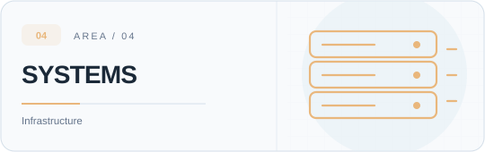
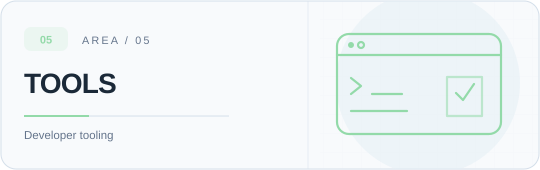
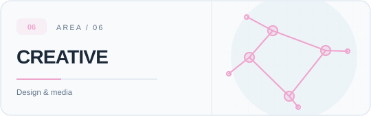
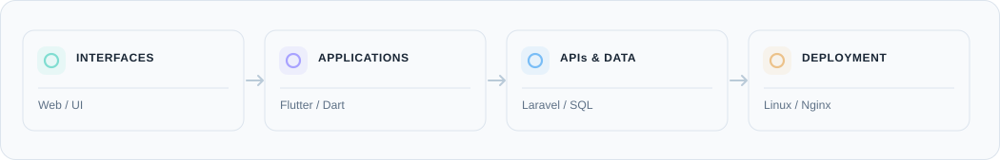

About
I'm a full-stack developer and designer based in Amman, Jordan. I work on mobile and web applications, backend services, databases, and deployment. My background in visual design also shapes how I approach interfaces and usability.
I study Computer Science at Al-Hussein Technical University (HTU).
What I work on
|
 Backend & integrationsAPIs, authentication, webhooks, background jobs, and external integrations. |
 Mobile applicationsFlutter apps, notifications, maps, background tasks, and store releases. |
|
 Web interfacesResponsive websites, admin dashboards, and multilingual interfaces. |
 Servers & deploymentLinux deployments, Nginx, server configuration, monitoring, and debugging. |
|
 Tools & automationVS Code extensions, scripts, CI/CD, and desktop tools. |
 Design & multimediaInterface design, visual identity, video, motion graphics, and 3D. |
Technical stack

| Category | Technologies and tools |
|---|---|
| Backend | PHP, Laravel, REST APIs, webhooks, background jobs, API integrations |
| Mobile | Dart, Flutter, Firebase, FCM, Android, iOS, maps and location features |
| Frontend | HTML, CSS, JavaScript, TypeScript, responsive UI |
| Databases | MySQL, SQL, relational modeling, queries, views and stored procedures |
| Infrastructure | Ubuntu / Linux, Nginx, PHP-FPM, SSH, DNS, Git, GitHub Actions, CI/CD |
| Developer tools | VS Code extension development, Python scripting, Git/GitHub |
| UI & graphic design | Figma, Adobe Illustrator, Photoshop |
| Media & 3D | Premiere Pro, After Effects, Blender |
Beyond my main stack
I also work with or explore UEFN and Verse for game systems, Arduino and basic electronics, desktop development with Tauri, and AI/automation experiments. These are separate from my core Laravel and Flutter work.
Practical experience
- Mobile delivery: Firebase messaging, mapping and live location features, Android/iOS builds, GitHub Actions, and mobile store release workflows.
- Backend operations: Webhooks and external API integration, service logs, background processes, and server-side troubleshooting.
- Database work: Designing relational schemas, writing queries, using views and stored procedures, and working with access permissions.
- Product interfaces: Dashboards, administration panels, roles and permissions, and Arabic/English (RTL/LTR) experiences.
More
Education: Computer Science student, Al-Hussein Technical University (HTU)
Location: Amman, Jordan
Languages: Arabic, English
Links: Portfolio · LinkedIn · GitHub repositories
Other tools and areas I've worked with
Flutter / Dart · Firebase · Laravel / PHP · MySQL · Nginx · Ubuntu · GitHub Actions · Adobe Creative Cloud · Blender · UEFN / Verse · Tauri / Rust experiments · Arduino / microcontrollers · Python utilities · REST APIs · SQL database design.